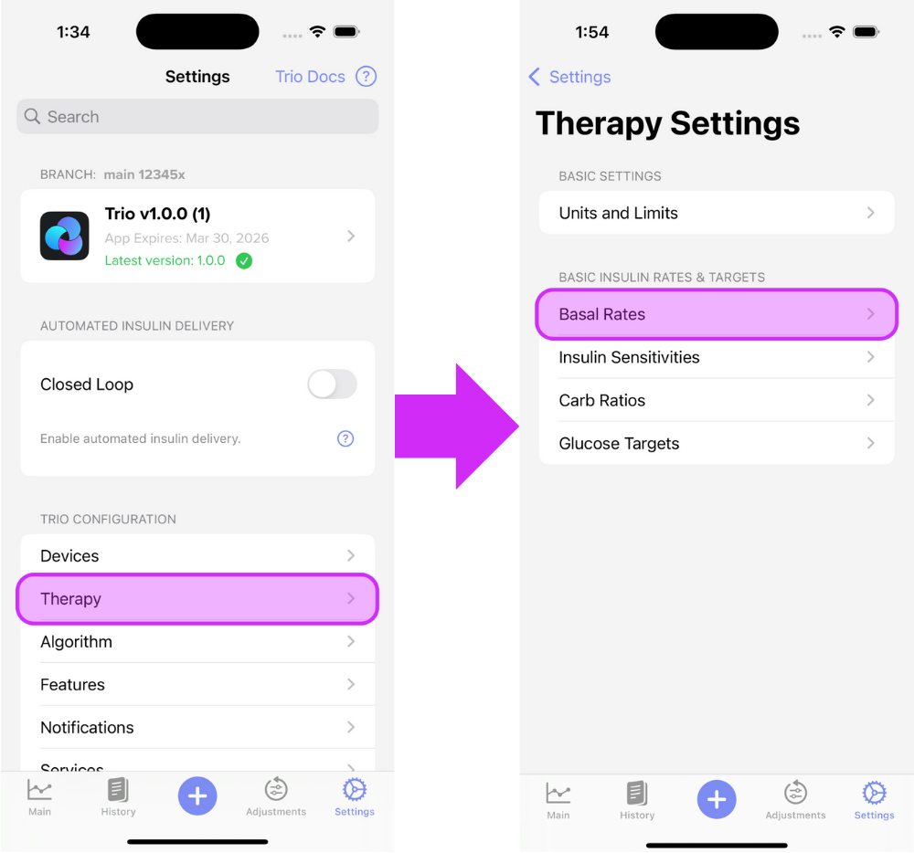
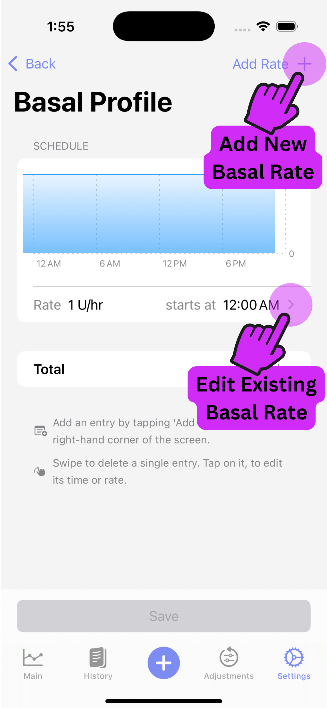
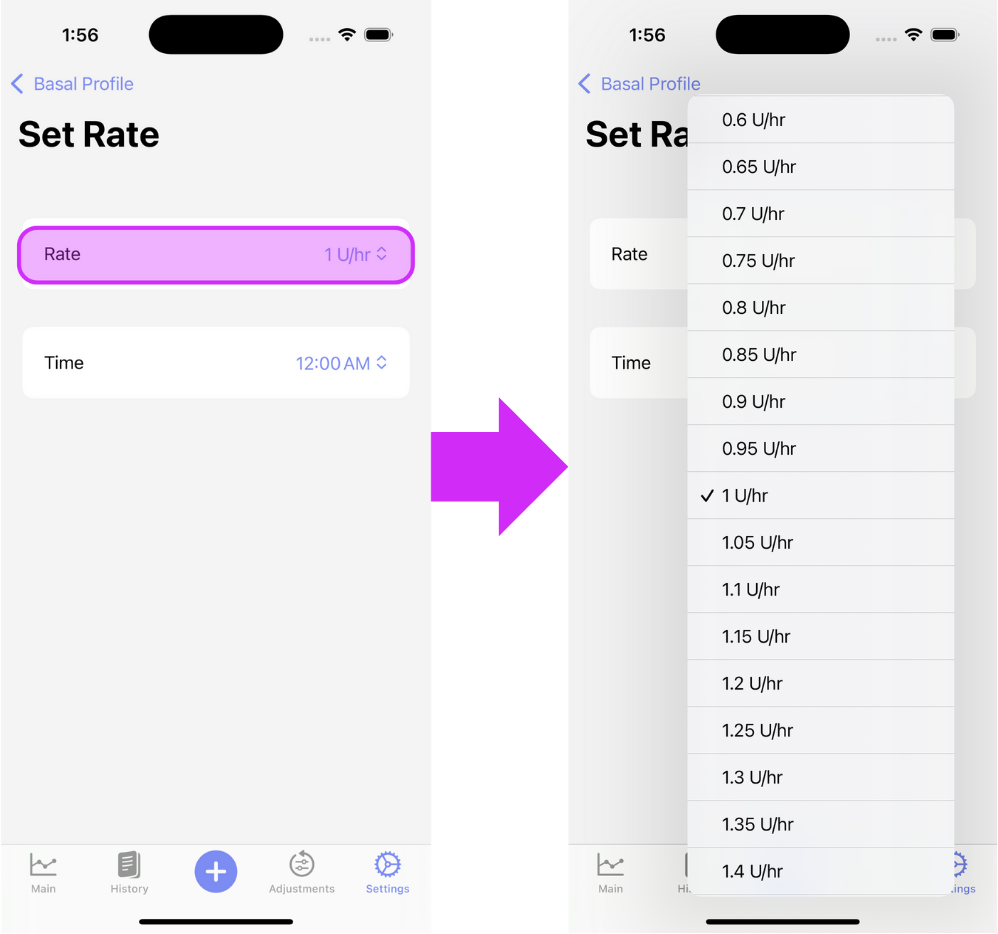
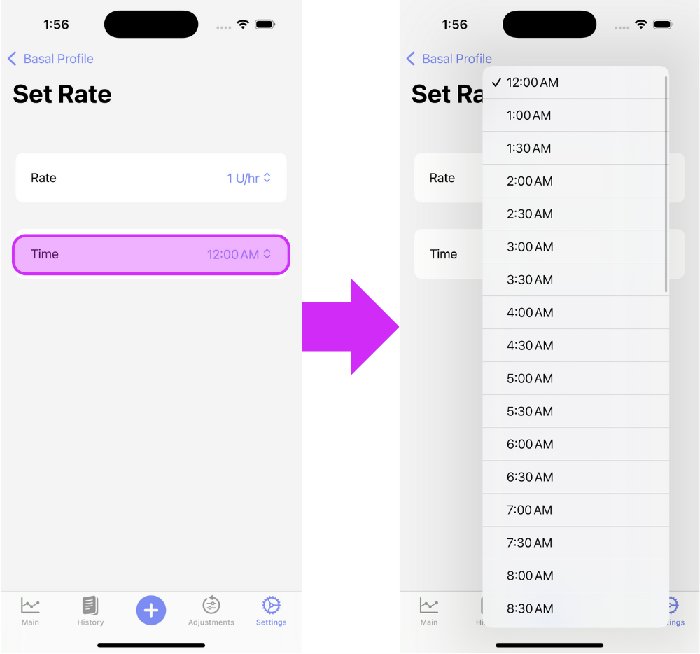
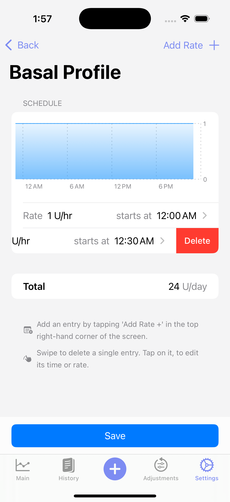
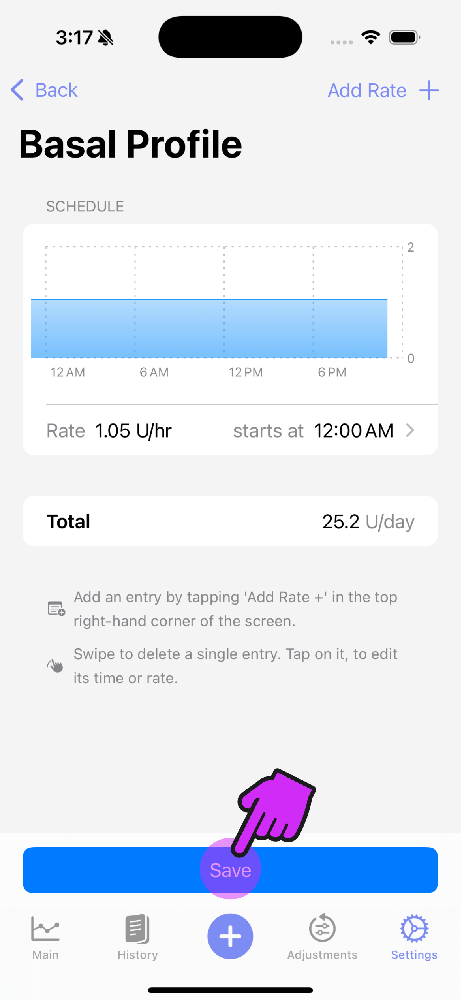

Basal Profile
Highlights
- Basal profile can be imported from a Medtronic pump or Nightscout account
- Walsh calculation may help you with a starting basal rate to adjust from
- Adjust your basal profile by doing fasting experiments and reviewing your IOB at times of fasting
Basal profile consists of your scheduled basal rates, which determine how much insulin is being delivered at each hour of the day. It is important to understand that these settings are not taken verbatim when looping with Trio. Based on your current blood sugar reading, they are adjusted every loop cycle and replaced with temporary basal rates. Your set values are altered by autosens or dynamic ISF based on your historical data.
Your basal profile values should be near your true value. Basal profiles are also important for insulin on board (IOB) calculations. Trio treats your scheduled basal profile as the zero point. The calculated IOB increases if you receive additional insulin on top of your basal rates, either as boluses or high temporary basal rates. Likewise, if you receive low temporary basal rates for a set period, your IOB decreases and can even become negative.
If you are coming from a pump, transferring basal profiles from your pump settings should be done with consideration and caution. They might not be entirely accurate for Trio. If you are going low or high while fasting, consider adjusting according to the instructions below
Testing/Adjusting Your Basal Rate
Baseline Calculation
If your current basal rates are close, but need some testing and adjustment, skip to the next section.
If your current basal rates are inaccurate or you are unsure where to even start, the formulas developed by Walsh, et.al. may help you find a starting point to then test or adjust your basal rates. Autosens and dynamicISF use these calculations as their foundation for making adjustments, so it stands to reason that a similar balancing of these settings would assist Trio in a more optimal performance.
Warning
This calculation is to be used as a starting point for testing and is not considered definitive or exact.
Basal Testing
Trio 1.0.2 provides a dedicated Basal Testing dosing mode. It derives Max IOB 0, Autosens bounds 100%, Dynamic ISF and sigmoid off, and a threshold preference of at least 72 mg/dL, without overwriting your saved preferences. It permits low-glucose suspension rather than normal predictive adjustments. Entering the mode attempts to cancel an automatic temporary basal, subject to delivery-state checks. The mode is distinct from Low Glucose Suspend and from manually changing saved algorithm settings. Planning and interpreting a basal test also depends on food, activity and recent insulin; the mode alone does not establish that a test is appropriate.
Basal Adjustment
You can also monitor your IOB to determine if your basal profile is accurate. Consistently negative or positive IOB during times of fasting may suggest that these hours need to decrease or increase their basal rate, respectively.
How To Enter Your Basal Profile(s) Into Trio
Step 1
Enter the Basal Profile screen

Step 2
Tap the "Add Rate +" on the top right of the screen until you have the number of basal rates you require. Then, edit each rate by tapping the arrow to the right of the basal rate.

Step 3
Adjust the rate

Step 4
Adjust the time

Step 5
Repeat Steps 2, 3, and 4 until all basal rates are set
Delete a Basal Rate
Should you need to delete a basal rate, just swipe left on the rate you need to remove.

Step 6 IMPORTANT
Save your changes!

Step 7
Proceed to Carb Ratios or return to New User Setup
1.0.2 source references
- F02 — Mode overrides differ from the documented manual basal-testing recipe
Full changes: added (+) and removed (−) text
--- upstream/configuration/settings/therapy/basal-rates.md+++ updated/configuration/settings/therapy/basal-rates.md@@ -30,8 +30,7 @@ ### Basal Testing -<!-- TODO: Update basal testing description -->-The standard method is to test your basal by having a relaxing 4-6 hours without eating at least two hours before you begin the test. Does your blood sugar stay steady? Or do you climb and need a correction? Or do you go low and need to eat? Setting accurate basal rates is crucial for Trio success. They determine how much of the insulin delivered (from basal and bolus) is counted as insulin on board (IOB).+Trio 1.0.2 provides a dedicated [Basal Testing dosing mode](../closed-loop.md#basal-testing). It derives Max IOB 0, Autosens bounds 100%, Dynamic ISF and sigmoid off, and a threshold preference of at least 72 mg/dL, without overwriting your saved preferences. It permits low-glucose suspension rather than normal predictive adjustments. Entering the mode attempts to cancel an automatic temporary basal, subject to delivery-state checks. The mode is distinct from Low Glucose Suspend and from manually changing saved algorithm settings. Planning and interpreting a basal test also depends on food, activity and recent insulin; the mode alone does not establish that a test is appropriate. ### Basal Adjustment @@ -91,3 +90,11 @@ ### Step 7 Proceed to [Carb Ratios](carb-ratios.md) or return to [New User Setup](../../new-user-setup.md)+++## 1.0.2 source references++- **F02 — Mode overrides differ from the documented manual basal-testing recipe**+ - [Trio/Sources/Models/Preferences+DosingMode.swift:6](https://github.com/nightscout/Trio/blob/0b29cd53415e7f0e668677749cad8daf81c68c2f/Trio/Sources/Models/Preferences+DosingMode.swift#L6)+ - [Trio/Sources/APS/OpenAPS/OpenAPS.swift:559](https://github.com/nightscout/Trio/blob/0b29cd53415e7f0e668677749cad8daf81c68c2f/Trio/Sources/APS/OpenAPS/OpenAPS.swift#L559)+ - [Trio/Sources/APS/APSManager.swift:1511](https://github.com/nightscout/Trio/blob/0b29cd53415e7f0e668677749cad8daf81c68c2f/Trio/Sources/APS/APSManager.swift#L1511)